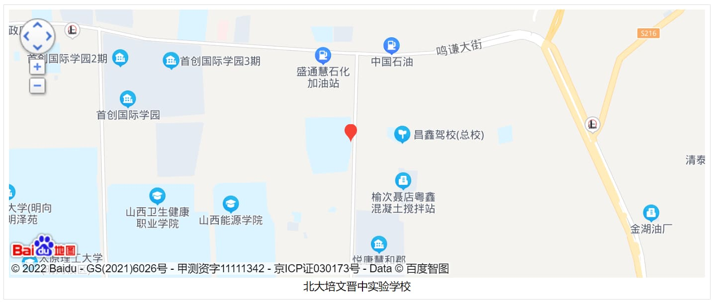
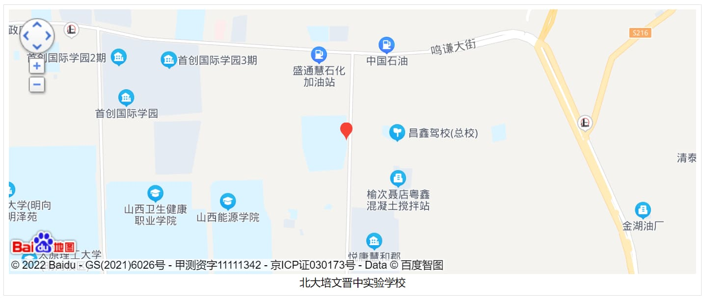

|学校位置：
山西省晋中市榆次区中都北路与文津街交叉口
山西省晋中市榆次区中都北路与文津街交叉口
北大培文晋中实验学校由北大培文教育文化产业（北京）有限公司、世界500强阳光金控旗下阳光教育集团与中维控股集团三方联合创办，是一所在晋中市委、市政府、市教育局及各部门支持下成立的民办学校。 学校位于山西大学城，紧邻武宿机场和太原高铁站，交通便利。
学校占地249亩，投资7.5亿，总建筑面积近22万平方米，设计规模8000个学位，已于2017年9月开学。是一所集小学、初中、高中、国际教育为一体的全寄宿民办学校。
校园建筑引入“第三代学校建筑”的设计理念：超宽走廊学习街、中华文化体验馆、艺术中心、演艺大厅、绘本馆、科技馆、陶艺馆、地球村……每一个功能场全数字覆盖。
校师资队伍由专家、名师、骨干教师、有良好素养的年轻教师构成，其中年轻教师的硕士研究生比例超过70%。全国著名校长、湖北省省优秀校长王进阶先生执掌学校全面工作，传承“敢为新，常为先”的北大精神，用先进的理念、科学的方法引领学校行动，全面提升学校德育、教学、教改、科研的特色化水平。
目前学校建成并投入使用及即将建成使用的艺体特长专用教室100多间、超大型一体化藏书阅览室1个、400M标准足球场一个、200M塑胶操场1个。
“五合一”是学校鲜明的办学特色，学校专门配置了数码钢琴教室、小琴房25间(每间1台钢琴)、器乐教室、古筝教室、声乐教室。 为满足科技教育需要，学校配置了生化教室、物理教室、机器人教室、3D打印教室、科技教室、信息技术教室若干。
学校始终坚持美育教育，开设有书法教室、国画教室、播音室、油画教室、陶艺教室(另有电窑间1个)、阅览室若干。
北大培文的孩子必须拥有健康的体魄，为满足孩子运动需要，学校开设有形体教室、乒乓球室、武术教室、轮滑教室等若干。
小学部
初中部
高中部
国际交流中心
英语歌曲鉴赏社团 、英美文化社、英文配音社、魅力译旅、3D打印社、“妙音”主持社、篮球训练营、田径社团、啦舞社、绿茵狂想足球社、精武少年团、铅塑社团、“逸墨”国画社、南锣奚琴社、培文梦之声、泥好漂亮陶艺社、Dream吉他社、Body JAM舞蹈室、“印象”油画社、弹拨故事琵琶社、布艺工坊、笔墨千秋书法社、钢琴社、流年拾光摄影社团、筝乐团、乒乓球社等。